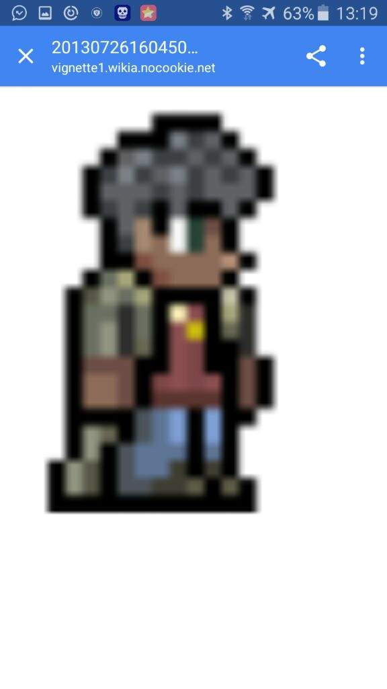

Mundo con mineral de plata
Siempre disponible en modo difícil
Mundo con mineral de tungsteno
Siempre disponible en modo difícil
Siempre disponible en modo difícil
Después de derrotar a Esqueletrón
Para que aparezca se necesitan cumplir dos requisitos: que haya una casa disponible y que el jugador tenga una bala o un arma de fuego en su inventario (pistolas de bengalas, bengalas y armas guardadas en cofres no cuentan).
El traficante de armas |
|
 |
|
Estadisticas |
|
Tipo |
NPC |
Salud |
250 |
Arma |
Pistola de pedernal Minitiburon (modo dificil) |
Defensa |
15 |
Especialidad |
Vender armas de fuego y municion |
Bestiario |
|
Descripcion |
El Traficante de armas tiene todo lo que cualquiera podría necesitar para disparar a cosas muertas, desde pequeñas balas redondas hasta armas hechas de tiburones. |
Bioma preferido |
El desierto |
Ids internas |
|
ID del bestiario |
19 |
ID de NPC |
7 |
Cuando hay Luna de Sangre:
Cuando hay Fiesta:
| Objeto | Precio | Disponibilidad |
|---|---|---|
| Bala de mosquete | 7 |
Siempre disponible |
| Bala de plata | 15 |
Durante la Luna de Sangre Mundo con mineral de plata Siempre disponible en modo difícil |
| Tungsten Bullet | 18 |
Durate la Luna de Sangre Mundo con mineral de tungsteno Siempre disponible en modo difícil |
| Flecha infame | 40 |
Derrotar al Devoramundos / Cerebro de Cthulhu Siempre disponible en modo difícil |
| Pistola de pedernal | 5 |
Siempre disponible |
| Minitiburón | 35 |
Siempre disponible |
| Piezas de arma ilegales | 20 |
Todas las Noches |
| Escopeta | 25 |
Después de derrotar al Muro carnoso |
| Bala hueca | 3 |
Después de derrotar al Muro carnoso |
| Estaca | 75 |
Tener un Lanzaestacas en el inventario |
| Proyectil Stynger | 75 |
Tener un Stynger en el inventario |
| Maíz de caramelo | 5 |
Tener un Fusil de maíz de caramelo en el inventario |
| Clavo | 1 |
Tener una Pistola de clavos en el inventario |
| Linterna calabaza explosiva | 15 |
Tener un Lanzador de linternas calabaza en el inventario |
| Sombrero de enfermera | 3 |
Durante Halloween |
| Camisa de enfermera | 3 |
Durante Halloween |
| Pantalones de enfermera | 3 |
Durante Halloween |
| Quad-Barrel Shotgun | 35 |
Estar en un cementerio
Después de derrotar a Esqueletrón |